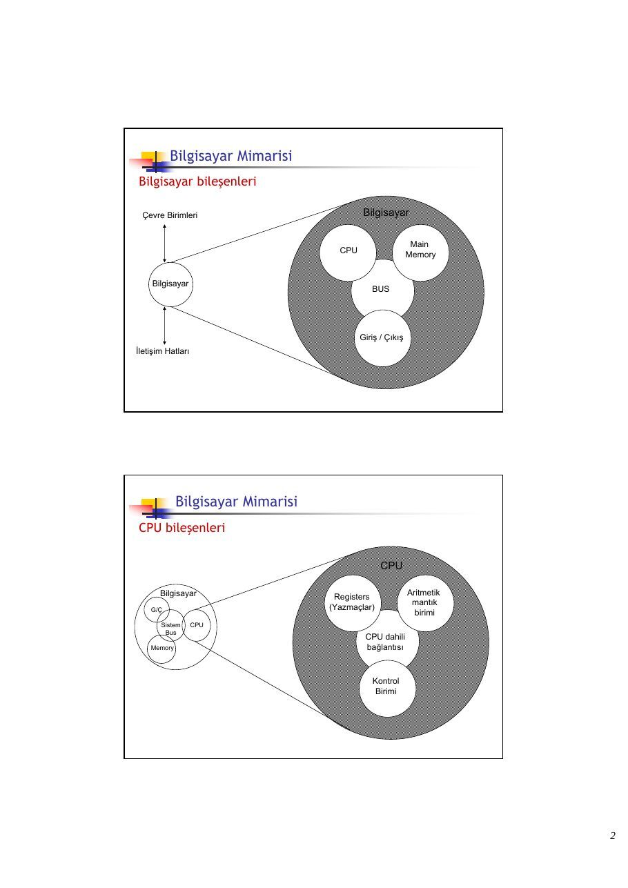
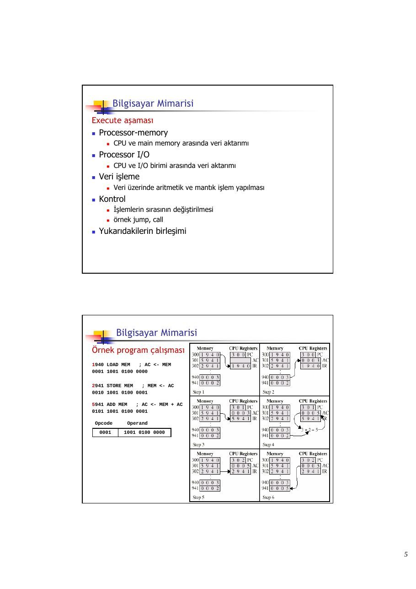
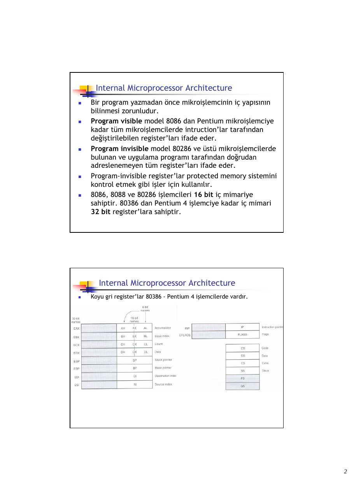
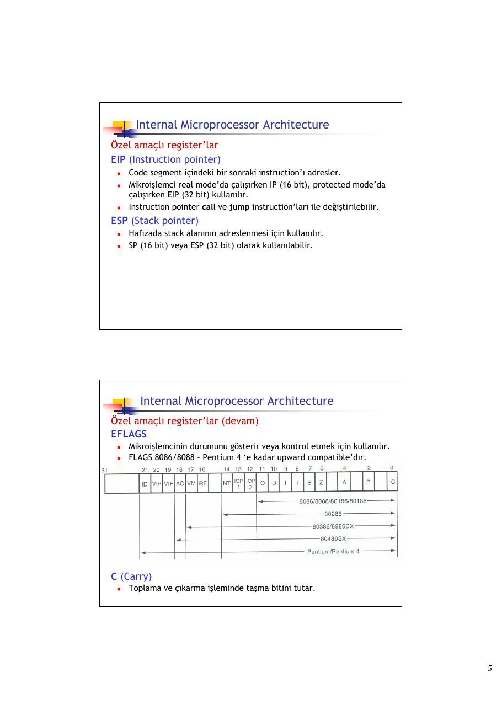
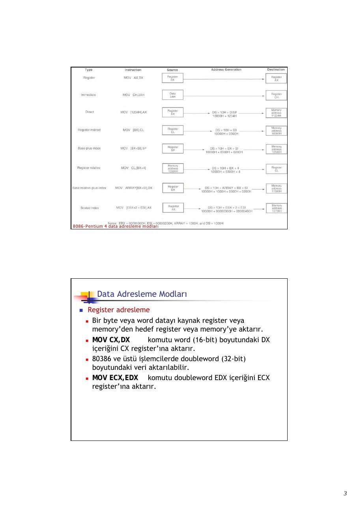
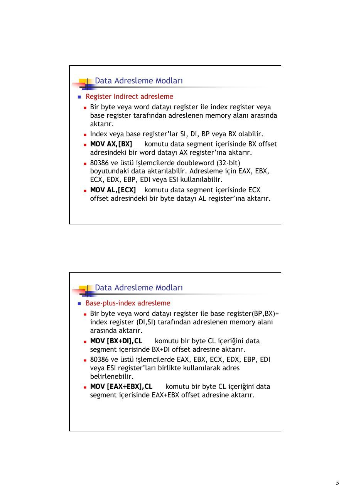

· EEM332
EEM332 Microprocessors: Architecture and Addressing (Gazi University, M. Ali Akcayol)
EEM332 – Mikroişlemciler · 26.10.2008 · 18.10.2026
This post collects the relevant notes and exercises from the Başkent University EEM332 Microprocessors course archive (2008–2008). It covers computer architecture, the instruction cycle, cache memory, real and protected mode, and addressing modes. Source: Gazi University, M. Ali Akcayol; BİL362 lecture notes. PDF archive copies of the documents and, where available, source code can be downloaded as a ZIP at the end of the post.
Note: This content belongs to a third-party source; it is shared for archival and nostalgic purposes with the source credited. It will be removed at the request of the rights holder.
CPUL1Introduction
BIL 362 Microprocessors
M. Ali Akcayol Gazi University Department of Computer Engineering
General Information Instructor: Assoc. Prof. Dr. M. Ali Akcayol Office: Başkent University, Department of Computer Engineering E-mail: akcayol@gazi.edu.tr Office hours: Mon 16:00-18:00
Teaching assistant: Res. Asst. Mehmet Dikmen Office: Başkent University, Department of Computer Engineering
Course web page: http://w3.gazi.edu.tr/~akcayol (\dersler\mikroişlemciler)
Classroom
Lab
General Information Grading Midterm: 25% Lab: 25% Weekly assignments: 10% Attendance: 5% Final: 35%
Main textbook Barry B. Brey, The Intel Microprocessors 8086/8088, 80186/80188, 80286, 80386, 80486, Pentium, Pentium Pro, Pentium II, Penium III, Pentium 4 Architecture, Programming and Interfacing (7th edition), Prentice Hall, 2006.
Supplementary textbook
Walter A.Triebel, Avtar Singh, The 8088 and 8086 Microprocessors
Programming, Interfacing, Software, Hardware and Applications (4th edition), Prentice Hall, 2002.
General Information Course topics
(1) Introduction to microprocessors and the development of Intel microprocessors (2) 8086 and 8088 microprocessor architectures: Registers, Stack, Physical and Logical addressing (3) Program development in assembly language (4) Addressing modes (5) Data transfer, arithmetic and logic instructions (6) Flow control, subroutine call and string instructions (7) 8086 programming (8) 8086 memory interfaces (9) 8086 basic input/output interfaces (10) Interrupts and their types (11) Introduction to the 80386, 80486 and Pentium processors
Historical Development Mechanical age
- The abacus, the first mechanical calculating device, was developed
by the Babylonians in 500 BC.
- In 1642 Blaise Pascal developed a calculating machine made up of
gears and wheels.
- Each gear has 10 teeth. When one completes a full turn, the next
advances by one tooth, performing the calculation.
- In 1947 Charles Babbage began developing a calculating machine
called the Analytical Engine. This machine, developed with the help of Augusta Ada Byron, used punch cards.
Historical Development Electrical age
- In the 1800s, as a result of advances in electric motors, the
calculating machine developed mechanically by Pascal came to be driven by motors.
- It was widely used in workplaces until the 1970s.
- In the 1970s the Bomar Brain handheld calculator was developed.
- Konrad Zuse developed a mechanical calculating machine in 1936
and an electromechanical one in 1941.
- In the 1940s Konrad Zuse developed the first modern computer,
called the Z3.
- The Z3 had a clock frequency of 5.33 Hz.
- In 1943 an electronic calculating machine called Colossus was
developed with vacuum tubes by Alan Turing.
- Colossus could not be reprogrammed and is called a special-purpose
computer.
Historical Development First generation: Vacuum tubes
- ENIAC (Electronic Numerical Integrator and Computer) was the first
general-purpose electronic computer.
- ENIAC was completed in 1946. It weighed 30 tons, occupied about
1500 m2 and consisted of 17000 vacuum tubes.
- ENIAC had a power of 140 kW and could perform 5000 additions per
second.
- In 1945 John von Neumann put forward the idea of storing both data
and program in memory and developed a computer called EDVAC (Electronic Discrete Variable Computer). (stored-program)
- In the following years, commercial computers such as UNIVAC
(Universal Automatic Computer) were developed.
Historical Development Second generation: Transistors (a computer made up of 10,000 transistors)
- The biggest change in electronic computers was the replacement of
vacuum tubes with transistors.
- The transistor was invented in 1947 at Bell Laboratories.
- In the late 1950s, computers built entirely from transistors were
produced. Third generation: Integrated circuits
- Integrated circuits consist of a large number of discrete elements
(transistors). They are called Small/Medium Scale Integration. Fourth generation
- Large Scale Integration (1,000 transistors in one chip)
Fifth generation
- Very Large Scale Integration (10,000 transistors in one chip)
Sixth generation
- Ultra Large Scale Integration (more than 1 million transistors in one chip)
Historical Development Computer generations
Historical Development Development of the number of transistors in a microprocessor
Historical Development Microprocessor age
- In 1971 Intel developed the 4004, the first microprocessor.
- It can address 4096 memory locations.
- Each memory location is 4 bits (a nibble) wide.
- The 4004 microprocessor instruction set has a total of 45 instructions.
- Its speed is 50 KIPs (kilo-instructions per second).
- The 30-ton ENIAC computer, developed in 1946, runs at 100 KIPs.
- The 4004 is slower but much lighter.
- In 1972 Intel developed the 8008 microprocessor.
- It is the 8-bit version of the 4004 microprocessor.
- The 8008 can address 16 KBytes.
- The 8008 instruction set has a total of 48 instructions.
Historical Development Microprocessor age (continued)
- In 1974 Intel developed the 8080.
- It can address 64 KBytes of memory.
- It is 10 times faster than the 8008 (500 KIPs).
- It was used in the MITS Altair 8800 computer.
- The BASIC language interpreter for the MITS Altair 8800 was
developed in 1975 by Bill Gates and Paul Allen.
- The assembler program for the MITS Altair 8800 was developed by
Digital Research Corporation.
- In 1977 Intel developed the 8085 microprocessor.
- It can address 64 KBytes of memory.
- It is Intel's last 8-bit microprocessor.
- Its speed is approximately 769 KIPs.
Historical Development Modern microprocessors
- In 1978 Intel developed the 8086, and a year later the 8088.
- They are 16-bit microprocessors.
- They can address 1 MByte of memory (16 times more than the 8085).
- Their speed is 2.5 MIPs (one instruction takes 400 ns).
- The 8086/8088 processors were the first to use a 4-6 byte cache, and
some instructions were prefetched.
- In 1983 Intel developed the 80286 microprocessor.
- It is a 16-bit microprocessor.
- It can address 16 MBytes.
- Its speed is 4 MIPs.
Historical Development Modern microprocessors (continued)
- In 1986 Intel developed the 80386 microprocessor.
- It is Intel's first 32-bit microprocessor.
- It has a 32-bit data bus and a 32-bit address bus.
- It can address 2^32 = 4 GBytes.
- In 1989 Intel developed the 80486 microprocessor.
- It is a 32-bit microprocessor.
- It contains an 8 KByte cache.
- Its speed is 50 MIPs.
- In 1993 Intel developed the Pentium microprocessor.
- It is a 32-bit microprocessor.
- It can address 4 GBytes.
- It has a 16 KByte split cache (8 KB instruction, 8 KB data).
- There are versions with speeds of 110 MIPs or 150 MIPs.
- The biggest innovation is that it has 2 integer processors.
Historical Development Modern microprocessors (continued)
- In 1995 Intel developed the Pentium Pro microprocessor.
- It is Intel's first 64-bit microprocessor.
- It has 3 integer units and 1 floating-point unit.
- It can address 2^36 = 64 GBytes. (address bus = 36 bits)
- It has a 16 KB (8K data + 8K instruction) on-chip L1 cache and a
256 KB L2 cache.
- In 1997 Intel developed the Pentium II microprocessor.
- It is a 64-bit microprocessor.
- In the Pentium processor, the L2 cache runs on a 60-66 MHz system bus.
- The Pentium II and the L2 cache are on a separate board, and the L2
cache runs at 133 MHz and is 512 KB in size.
- The Pentium II Xeon has a 32 KB L1 cache and 512 KB, 1 MB, 2 MB L2
cache.
Historical Development Modern microprocessors (continued)
- In 1999 Intel developed the Pentium III microprocessor.
- It is a 64-bit microprocessor.
- It runs at a clock frequency of 1 GHz.
- It can address 2^36 = 64 GBytes. (address bus = 36 bits)
- It has 512 KB or 256 KB of cache.
- The memory bus speed is 100 MHz.
- Celeron processors have a memory bus clock speed of 66 MHz.
- In 2000 Intel developed the Pentium 4 microprocessor.
- It is a 64-bit microprocessor.
- It runs at a clock frequency of 3.2 GHz.
- L1 cache is 8-32 KB, L2 cache is 256-512 KB.
Historical Development Development of Intel microprocessors
Historical Development Change in the complexity of Intel microprocessors
Historical Development Performance of Intel microprocessors
Historical Development Development of Intel microprocessors
Historical Development Development of Intel microprocessors (continued)
Historical Development General structures of Intel microprocessors
Historical Development Intel and Motorola microprocessors
Historical Development Intel and Motorola microprocessors (continued)
Historical Development Intel iCOMP index
Historical Development Intel iCOMP2 index
Historical Development Intel microprocessors with SYSmark 2002
Assignment
- Prepare a report on microprocessor performance tests and the
related test software.
CPUL2Architecture
BIL 362 Microprocessors
M. Ali Akcayol Gazi University Department of Computer Engineering
Topics
- Computer Architecture
- Components of the Computer, CPU and Control Unit
- Instruction Cycle
- Interrupts
- Bus
- Storage Devices
- Cache Memory
Computer Architecture Computer components
Peripherals Computer
Main CPU Memory
Computer
BUS
Input / Output Communication Lines
Computer Architecture CPU components
CPU
Computer Arithmetic Registers logic G/Ç (Registers) unit System CPU Bus CPU internal Memory connection
Control Unit
Computer Architecture Control Unit components
Control Unit
CPU
Sequencing ALU logic Control Internal Unit Bus Control unit Registers registers and decoder
Control Memory
Computer Architecture General view of the computer
Computer Architecture
Two-step instruction cycle
- Fetch: bringing the instruction (command) from memory
- Execute: the instruction carrying out its function
Computer Architecture Fetch stage
- The Program Counter (PC) holds the address of the next instruction
to be fetched
- The processor fetches the instruction from the memory location
indicated by the PC.
- The PC value is incremented
- Unless there are operations such as Jump, Call, etc.
- The instruction is stored in the Instruction Register (IR).
- The processor interprets the instruction and performs the required
operation.
Computer Architecture Execute stage
- Processor-memory
- Data transfer between the CPU and main memory
- Processor I/O
- Data transfer between the CPU and an I/O unit
- Data processing
- Performing arithmetic and logic operations on data
- Control
- Changing the order of operations
- e.g. jump, call
- A combination of the above
Computer Architecture Example program execution
1940 LOAD MEM ; AC <- MEM
0001 1001 0100 0000
2941 STORE MEM ; MEM <- AC
0010 1001 0100 0001
5941 ADD MEM ; AC <- MEM + AC
0101 1001 0100 0001
Opcode Operand 0001 1001 0100 0000
Computer Architecture Instruction cycle state diagram
Computer Architecture Interrupts
- An interrupt is the interruption of the normal sequence of a
program by other modules.
- Program interrupts
- overflow, division by zero, …
- Timer interrupts
- Generated by the processor's internal clock
- I/O interrupts
- Generated by the I/O controller.
- Hardware failure interrupts
- memory parity error, HDD read error
Computer Architecture Program flow control
Computer Architecture Program flow control
Computer Architecture Instruction cycle state diagram (with interrupt control)
Computer Architecture Nested multiple interrupts
Computer Architecture All units must be connected Memory
- receives and sends data
- receives address information
- receives control signals (write, read, timing)
I/O unit
- receives data from the CPU
- receives data from peripherals
- sends data to the CPU
- sends data to peripherals
- receives control signals from the CPU
- sends control signals to peripherals
(spin the disk, eject the CD, etc.)
- receives addresses from the CPU (peripheral port number)
- sends interrupt signals to the CPU
Computer Architecture All units must be connected CPU connection
- reads instructions and data from memory
- writes the data resulting from an operation to the relevant place
- sends control signals to other units
- receives incoming interrupts and performs the required operation
Computer Architecture What is a BUS?
- It is a communication path connecting two or more devices.
- It generally works in a broadcast manner.
- There are control, data and address buses.
Data bus
- Carries data (instructions or data)
- Data bus width (number of connections) greatly affects computer
performance (8, 16, 32, 64 bits) Address bus
- Carries the address of the destination or source data.
- Address bus width determines the maximum memory capacity of the
system. (8086 address bus 16 bits, maximum memory 64 KB) Control bus
- Memory write and read signals.
- Interrupt request
- Clock signals
Computer Architecture Bus connection diagram
Computer Architecture Data storage units by access method
- Sequential
- Starts from the beginning and reads in order
- Access time depends on where the data is located
- e.g. tape
- Direct
- Each block has its own address
- Access is made by direct jumping, and a sequential search is made
within the block
- Access time depends on the previous position and where the data is
located
- e.g. disk
Computer Architecture Data storage units by access method
- Random
- Access time does not depend on the previous position
- e.g. RAM
- Associative
- Data can be stored in a block area and is reached by comparison
- Access time does not depend on the previous position or access
- e.g. cache
Computer Architecture Memory hierarchy Unit cost increases Access time decreases Size decreases Gets closer to the CPU Frequency of use increases
Computer Architecture Memory performance
- Access time
- The time between specifying the address and retrieving the data
- Memory cycle time
- The time between two accesses
- Transfer rate
- The rate of data transfer per unit time
Computer Architecture Cache Memory
- It is located between the CPU and main memory.
- It can be placed inside the CPU.
Computer Architecture Cache Memory
- The CPU requests the contents of a memory address
- First, it is checked whether this data is in the cache memory
- If it is, it is taken from the cache (fast)
- If not, the data is read from memory and transferred into the
cache memory
- It is then transferred from the cache memory to the CPU
Computer Architecture Cache Memory Organization
Computer Architecture Pentium 4 Architecture
Assignment
- Prepare a report on pipelining.


CPUL3Architecture8086
BIL 362 Microprocessors
M. Ali Akcayol Gazi University Department of Computer Engineering
Topics
- Internal microprocessor architecture
- Real mode addressing
- Protected mode addressing
Internal Microprocessor Architecture
- Before writing a program, it is essential to know the internal
structure of the microprocessor.
- The program visible model refers to the registers that can be
modified by instructions in all microprocessors from the 8086 to the Pentium.
- The program invisible model refers to all the registers found in
80286 and later microprocessors that cannot be directly addressed by an application program.
- Program-invisible registers are used for tasks such as controlling
the protected memory system.
- The 8086, 8088 and 80286 processors have a 16-bit internal
architecture. From the 80386 to the Pentium 4, the internal architecture has 32-bit registers.
Internal Microprocessor Architecture
- The dark gray registers are present in the 80386 - Pentium 4 processors.
Internal Microprocessor Architecture
- A program can contain 8-, 16- and 32-bit registers.
- The 8-bit registers are AH, AL, BH, BL, CH, CL, DH and DL.
(The ADD AL, AH instruction adds the AH register to the AL register. Only AL changes value.)
- The 16-bit registers are AX, BX, CX, DX, SP, BP, DI, SI, IP,
FLAGS, CS, DS, ES, SS, FS and GS. (The ADD DX, CX instruction adds the CX register to the DX register. Only DX changes value.)
- The 32-bit registers are EAX, EBX, ECX, EDX, ESP, EBP, EDI, ESI,
EIP and EFLAGS.
- The 32-bit extended registers and the 16-bit FS and GS registers
are found only in the 80386 and later processors. (The ADD ECX, EBX instruction adds the EBX register to the ECX register. Only ECX changes value.)
Internal Microprocessor Architecture
- Some registers are general or multipurpose, while others are
special purpose. General-purpose registers EAX (Accumulator)
- It is written as EAX when used as 32 bits, AX when used as 16 bits
and AH or AL when used as 8 bits.
- When used as 8 or 16 bits, only the lower 8 or 16 bits change
value; the rest remains unchanged.
- It is used as the accumulator in operations such as multiplication
and division.
- In the 80386 and later processors, EAX can be used to hold an
offset address in memory. EBX (Base index)
- It can be used as EBX, BX, BH and BL.
- In all microprocessors it can also hold an offset address in memory.
Internal Microprocessor Architecture General-purpose registers (continued) ECX (Count)
- In the 80386 and later processors it holds an offset address in memory.
- Instructions such as string, loop, shift and rotate use the count value.
- Shift and rotate instructions use CL, string repeat instructions (REP,
REPE, REPNE) CX and loop instructions (LOOP) CX veya ECX kullanır.EDX (Data)
- It holds part of the result of a multiplication or part of the
dividend in a division.
- In the 80386 and later processors it can be used to address data in memory.
EBP (Base pointer)
- In all processors it is used to address a location in memory.
- It can be used as BP or EBP.
Internal Microprocessor Architecture General-purpose registers (continued) EDI (Destination index)
- It is generally used in string instructions to address the
destination string.
- It can be used as DI (16 bits) or EDI (32 bits).
ESI (Source index)
- It is generally used in string instructions to address the source
string.
- It can be used as SI (16 bits) or ESI (32 bits).
Internal Microprocessor Architecture Special-purpose registers EIP (Instruction pointer)
- It addresses the next instruction within the code segment.
- When the microprocessor is running in real mode, IP (16 bits) is
used; when running in protected mode, EIP (32 bits) is used.
- The instruction pointer can be changed by call and jump instructions.
ESP (Stack pointer)
- It is used to address the stack area in memory.
- It can be used as SP (16 bits) or ESP (32 bits).
Internal Microprocessor Architecture Special-purpose registers (continued)
EFLAGS
- It indicates the state of the microprocessor or is used to control it.
- FLAGS is upward compatible from the 8086/8088 to the Pentium 4.
C (Carry)
- It holds the carry bit in addition and subtraction.
Internal Microprocessor Architecture Special-purpose registers (continued) P (Parity)
- It takes the value 0 for odd parity and 1 for even parity.
- Parity is the number of 1s in a series of bits. It is used for error
checking in data communication.
- In the first Intel processors, error checking was done in the
microprocessor. Today, the parity check is done in network cards. A (Auxiliary carry)
- It is used in BCD addition and subtraction.
Z (Zero)
- It indicates that the result of an arithmetic or logic operation is
zero (for Z = 1). Otherwise (Z = 0) the result is nonzero. S (Sign)
- It holds the sign of the result of an arithmetic or logic operation.
(For S = 1 the result is negative, for S = 0 the sign is positive)
Internal Microprocessor Architecture Special-purpose registers (continued) T (Trap)
- It makes the microprocessor run in debug mode (for T = 1).
I (Interrupt)
- The interrupt bit controls the INTR input pin.
- It can be changed with the STI (Set I flag) and CLI (Clear I flag)
instructions.
D (Direction)
- It controls whether the DI and SI registers are in increment or
decrement mode.
- For D = 1 the registers automatically decrement, for D = 0 they increment.
- The STD (Set direction) and CLD (Clear direction) instructions change it.
O (Overflow)
- In signed numbers, overflow occurs if the result of an addition or
subtraction is larger than the capacity of the machine.
- 7FH (+127) + 01H (+1) = 80H (-128) 8-bit addition
- 01111111 + 00000001 = 10000000
Internal Microprocessor Architecture Segment registers CS (Code)
- The code segment is the part that holds the code used by the
microprocessor.
- CS holds the starting address of the code segment.
- The size of CS is 64 KBytes in real mode; in protected mode, the
starting address and size are determined by a descriptor.
- It is 64 KBytes for the 8088 and 80286, and for the 80386 and later
it can be 4 GBytes when the microprocessor is running in protected mode. DS (Data)
- The data segment holds the data used by the program.
- DS holds the starting address of the data segment.
- It is 64 KBytes for the 8088 and 80286, and for the 80386 and later
it can be 4 GBytes when the microprocessor is running in protected mode.
Internal Microprocessor Architecture Segment registers (continued) ES (Extra)
- The extra segment is used by some string instructions to reach the
destination data. SS (Stack)
- The stack segment holds the part of memory used as the stack.
- Addressing within the stack segment can be done with BP.
FS and GS
- They are used in the 80386 and later processors.
- They are used by Windows.
Real Mode Memory Addressing
- The 80286 and later processors can run in real mode or protected mode.
- The 8086/8088 processors run directly in real mode.
- In real mode operation, only 1 MB of memory can be addressed. (Even
if the processor is a Pentium)
- This 1 MB of memory is called real memory, conventional memory or
DOS memory.
- All computers run in real mode when first powered on.
Real Mode Memory Addressing Segment and Offset
- In real mode, the desired memory location is reached by combining
the segment address and the offset address.
- The segment address is in one of the segment registers and holds the
starting address of the 64 KB segment.
- The offset address specifies an address within the 64 KB segment.
- In real mode, the segment size is always 64 KB.
- In real mode, the 20-bit address for the segment starting address
is obtained by appending 0H to the right end of the segment register value.
- If the segment register = 1200H, the segment starting address is
12000H.
- Since 0H is always appended at the right end, segments can start at
16-byte intervals. (paragraph)
Real Mode Memory Addressing Segment and Offset (continued)
- The segment ending address is found by adding FFFFH to the starting address.
- If the segment register value = 3000H, the segment starting address is
30000H and the ending address is 30000H + FFFFH = 3FFFFH.
Real Mode Memory Addressing Segment and Offset (continued)
- The desired memory location is found by adding the offset address to
the segment starting address.
- If the segment starting address = 1000H and the offset address =
2000H, the microprocessor addresses memory location 12000H.
- The segment and offset address is written as 1000:2000.
(Segment start = 1000H and offset address = 2000H)
Default Segment and Offset Registers- The microprocessor calculates a segment and offset address by
applying certain rules.
- CS is always used together with IP. CS holds the code segment
starting address and IP holds the address within the segment (the address of the next instruction to be executed).
- The combination is shown as CS:IP or CS:EIP.
- CS = 1400H, IP/EIP = 1200H, CS:IP = 14000H+1200H = 15200H
Real Mode Memory Addressing
Default Segment and Offset Registers (continued)16-bit
- Data in the stack is indicated by the stack segment and the stack
pointer or base pointer registers.
- The combination is SS:SP (SS:ESP) or SS:BP (SS:EBP).
- SS = 2000H, BP = 3000H, SS:BP = 20000H+3000H = 23000H
Real Mode Memory Addressing
Default Segment and Offset Registers (continued)32-bit
- The 80386 and later processors have more segment and offset address
selection options.
Real Mode Memory Addressing Example placement of segments
Real Mode Memory Addressing Placement of an application program in memory
- The code, data and stack segments do not use the full 64 KB.
- Segments can overlap.
Protected Mode Memory Addressing
- In the 80286 and later processors, it allows access to areas above
the 1 MB memory area. (Windows runs in protected mode)
- In protected mode as well, the offset address specifies the desired
address within the segment.
- The segment register stores a selector and selects a descriptor in
the descriptor table.
- The descriptor specifies the segment starting address, its size and
access rights.
- In the 80386 and later, the offset address is 32 bits and the
segment size can be 4 GB.
Protected Mode Memory Addressing
Protected Mode Memory Addressing Selectors and Descriptors
- Selectors are stored in segment registers and select one of the 8192
descriptors found in two tables.
- The global descriptor table holds information about the segments
that will be used by all programs.
- The local descriptor table holds information about the segments that
will be used by one application.
- A total of 16384 segments can be created in the two descriptor tables.
- The size of one segment can be 4 GB. Total addressable memory =
4 GB x 16384 = 64 TB.
- Each descriptor is 8 bytes. The space occupied by each descriptor
table = 8192 x 8 = 64 KB.
- The 80386-Pentium 4 descriptors have a different structure.
Protected Mode Memory Addressing Selectors and Descriptors (continued)
- The base address part holds the starting address of the segment.
- The limit part holds the last offset address of the segment.
Protected Mode Memory Addressing Selectors and Descriptors (continued)
- G (Granularity bit) enlarges the segment limit by multiplying it by 4K.
Base = Start = 10000000H
G = 0
End = Base + Limit = 10000000H + 001FFH = 100001FFHBase = Start = 10000000H
G = 1
End = Base + Limit = 10000000H + 001FFFFFH = 101FFFFFH- In the 80386 and later, AV (Available) specifies whether the segment
is available for use.
- AV = 1 available, AV = 0 not available
Protected Mode Memory Addressing Selectors and Descriptors (continued)
- For the 80386 and later, the D bit determines the operating mode.
(real / protected mode)
- D = 0, 16-bit instructions, 16-bit offset address, 16-bit register.
- D = 1, 32-bit instructions, 32-bit offset address, 32-bit register.
- The access rights byte controls access to the protected mode segment.
Protected Mode Memory Addressing Selectors and Descriptors (continued) Segment access rights
Protected Mode Memory Addressing Selectors and Descriptors (continued)
- The descriptor is selected with the segment register.
- 13 bits of the segment register select one of the 8192 descriptors.
- TI = 0 selects from the global descriptor table, TI = 1 from the local
descriptor table.
- RPL (Requested Privilege Level), 00 highest, 11 lowest.
- If the RPL has priority over the DPL in the descriptor, access is
granted. (RPL = 10, DPL = 11)
- Windows uses 00 for kernel operations and 11 for driver programs.
.
Protected Mode Memory Addressing Selectors Descriptors (continued)
access rights
base
limit
DS = 8 = 0000000000001000, TI = 0(global), RPL = 00(highest), Selector = 0000000000001 (Descriptor 1)
Protected Mode Memory Addressing Program-Invisible Registers
- The global and local descriptor tables are present in the 80286-Pentium 4
processors.
- Program-invisible registers are used to access and address these tables.
- Program-invisible registers are used only in protected mode.
- GDTR (Global Descriptor Table Register) and IDTR (Interrupt
Descriptor Table Register) hold the base addresses and limits of the tables.
- LDTR (Local Descriptor Table Register) is used to access the local
descriptor table.
- TR (Task Register) enables switching between tasks (a program or
procedure) in approximately 17µs.
- Multitasking is realized by sequential switching by the TR.
Protected Mode Memory Addressing Program-Invisible Registers (continued)
Assignment
- Prepare a report on memory swapping, partitioning and paging.


CPUL4AdressingModes
BIL 362 Microprocessors
M. Ali Akcayol, Gazi University, Department of Computer Engineering
Topics: Addressing Modes
- Data addressing modes
- Register addressing
- Immediate addressing
- Direct addressing
- Register indirect addressing
- Base-plus-index addressing
- Register relative addressing
- Base relative-plus-index addressing
- Scaled-index addressing
- Program memory addressing modes
- Direct program memory addressing
- Relative program memory addressing
- Indirect program memory addressing
- Stack memory addressing modes
Addressing Modes
- To develop software effectively, the addressing modes available for each
instruction in the microprocessor must be known.
- Because of its flexibility, the MOV instruction is used as the example for all
addressing modes in this section.
- The MOV instruction transfers data between register-register or register-memory:
bytes or words for the 8086-80286 processors, and bytes, words, or doublewords for the 80386 and later processors.
- For program memory addressing, the examples use the CALL and JUMP
instructions to show how the program flow is changed.
- The PUSH and POP instructions are used for stack memory addressing.
Data Addressing Modes
- The general form of the MOV instruction is as follows.
- In all instructions, the rightmost item is the source, the one to its left is the
destination, and the leftmost is the opcode.
- Memory-to-memory transfer is not allowed (except for MOVS).
- The MOV instruction above transfers one word. It transfers the contents of the
BX register to the AX register.
- The contents of the BX register do not change; it is only copied.
- The contents of the destination register (AX) change. (In instructions such as
CMP and TEST, the destination does not change.)
8086-Pentium 4 data addressing modes
Data Addressing Modes
- Register addressing
- Transfers a byte or word of data from a source register or
memory to a destination register or memory.
- The MOV CX,DX instruction transfers the contents of DX, which is word
(16-bit) in size, to the CX register.
- On 80386 and later processors, doubleword (32-bit) data can be
transferred.
- The MOV ECX,EDX instruction transfers the doubleword contents of EDX to
the ECX register.
Data Addressing Modes
- Immediate addressing
- Transfers a byte or word of data to a destination register or
memory.
- The MOV AL,22H instruction transfers the byte-sized value 22H to the AL
register.
- On 80386 and later processors, doubleword (32-bit) data can be
transferred.
- The MOV EBX,12345678H instruction copies the doubleword value
12345678H to the EBX register.
Data Addressing Modes
- Direct addressing
- Transfers a byte or word of data between a register and
memory.
- The instruction set does not allow memory-to-memory transfers.
(Except for MOVS.)
- The MOV CX,LIST instruction transfers the word-sized contents at memory
address LIST to the CX register.
- On 80386 and later processors, doubleword (32-bit) data can be
transferred.
- The MOV ESI,LIST instruction transfers the doubleword-sized contents at
memory address LIST to the ESI register.
Data Addressing Modes
- Register Indirect addressing
- Transfers a byte or word of data between a register and the
memory location addressed by an index register or base register.
- The index or base register can be SI, DI, BP, or BX.
- The MOV AX,[BX] instruction transfers the word at offset address BX in
the data segment to the AX register.
- On 80386 and later processors, doubleword (32-bit) data can be
transferred. EAX, EBX, ECX, EDX, EBP, EDI, or ESI can be used for addressing.
- The MOV AL,[ECX] instruction transfers the byte at offset address ECX in
the data segment to the AL register.
Data Addressing Modes
- Base-plus-index addressing
- Transfers a byte or word of data between a register and the
memory location addressed by a base register (BP, BX) + an index register (DI, SI).
- The MOV [BX+DI],CL instruction transfers the byte in CL to offset address
BX+DI in the data segment.
- On 80386 and later processors, the address can be formed by using the
EAX, EBX, ECX, EDX, EBP, EDI, or ESI registers together.
- The MOV [EAX+EBX],CL instruction transfers the byte in CL to offset
address EAX+EBX in the data segment.
Data Addressing Modes
- Register relative addressing
- Transfers a byte or word of data between a register and the
memory location addressed by a base register (BP, BX) or index register (DI, SI) + a displacement.
- The MOV AX,[BX+4] instruction transfers the contents of offset address
BX+4 in the data segment to the AX register.
- The MOV AX,ARRAY[BX] instruction transfers the contents of offset
address ARRAY+BX in the data segment to the AX register.
- On 80386 and later processors, any register can be used for
addressing.
- It can be used as MOV AX,[ECX+4] or MOV AX,ARRAY[EBX].
Data Addressing Modes
- Base relative-plus-index addressing
- Transfers a byte or word of data between a register and the
memory location addressed by a base register (BP, BX) + an index register (DI, SI) + a displacement.
- The MOV AX,ARRAY[BX+DI] instruction transfers the contents of offset
address ARRAY+BX+DI in the data segment to the AX register.
- The MOV AX,[BX+DI+4] instruction transfers the contents of offset address
BX+DI+4 in the data segment to the AX register.
- On 80386 and later processors, any register can be used for
addressing.
- The MOV EAX,ARRAY[EBX+ECX] instruction transfers the contents of
offset address ARRAY+EBX+ECX in the data segmentto the EAX register.
Data Addressing Modes
- Scaled-index addressing
- Available on 80386 and later processors.
- The second register used for the offset address is modified by a scale
factor of 2x, 4x, or 8x.
- The MOV EDX,[EAX+4*EBX] instruction transfers the contents of offset
address EAX+4*EBX in the data segment to the EDX register.
- Scaling makes it possible to access word (2x), doubleword (4x), or
quadword (8x) contents.
- The MOV EAX,ARRAY[EBX+ECX] instruction transfers the contents of
offset address ARRAY+EBX+ECX in the data segmentto the EAX register.
Data Addressing Modes
- Register addressing - details
- It is the most commonly used form of data addressing. Knowing the
register names is sufficient.
- The AH, AL, BH, BL, CH, CL, DH, and DL registers are used for 8-bit
register addressing.
- The AX, BX, CX, DX, SP, BP, SI, and DI registers are used for 16-bit
register addressing.
- The EAX, EBX, ECX, EDX, ESP, EBP, ESI, and EDI registers are used for
32-bit register addressing.
- Some MOV instructions, as well as PUSH and POP, use the CS, ES, DS,
SS, FS, and GS registers.
- Registers of different sizes cannot be used together. (MOV
AX, AL or MOV EAX, AL). Some instructions, such as SHL, can use registers of different sizes.
- MOV does not affect the flag bits.
Data Addressing Modes
- Register addressing - details
- Example instructions for register addressing
Data Addressing Modes
- Register addressing - details
- The MOV instruction changes only the destination register. (CMP and
TEST do not change the destination register.)
- The MOV BX, CX instruction copies the value 1234H from the CX register
to the BX register.
- The leftmost 16 bits of the EBX register do not change.
Data Addressing Modes
- Register addressing - details
- The following instructions transfer 8-bit, 16-bit, or 32-bit data.
- The leftmost 16 bits of the EBX register do not change.
3 bytes 2 bytes
Data Addressing Modes
- Immediate addressing - details
- The data immediately follows the opcode and is constant.
- Immediate addressing operates on 8- or 16-bit data.
- On 80386 – Pentium 4 processors, doubleword (32-bit) data can be
used.
- The following instruction copies the value 13456H (located in memory
immediately after the opcode) to the EAX register.
0 0 0 1 3 4 5 6
- Some assemblers perform immediate addressing as MOV AX, #13456H
(using the # sign).
- Intel ASM, Microsoft MASM, and Borland TASM do not use #.
Data Addressing Modes
- Immediate addressing - details
- Example instructions for immediate addressing
Data Addressing Modes
- Immediate addressing - details
- The .MODEL TINY directive makes the assembler place the program in a
single code segment.
- The .CODE directive marks the start of the code segment.
- The .STARTUP directive marks the starting instruction of the program.
- The .EXIT directive ends the program and returns to DOS.
- The END directive marks the end of the program file.
MOV AX, 0 komutununis the offset address.
Data Addressing Modes
- Immediate addressing - details
- Each statement consists of 4 parts.
- The label is at the far left. It assigns a symbolic name to the memory
location where it is placed.
- The second field is the opcode.
- The third field(s) are the operands to the right of the opcode.
- The last field is the comment field at the far right. A comment always
starts with ;.
Data Addressing Modes
- Direct addressing - details
- In direct addressing, the MOV instruction transfers data between a memory
location in the data segment and a register (AL, AX, EAX, …).
- The MOV AL,DATA instruction transfers 8 bits from the memory location
indicated by DATA (e.g., 1234H) in the data segment to AL.
- Some assemblers write this as MOV AL,DS:[1234H] or MOV AL,DS:[DATA].
- If DS = 1000H, the data at physical address 11234H in the data segment
is transferred to the AL register.
Data Addressing Modes
- Direct addressing
examples
Data Addressing Modes
- Direct addressing example program
offset machine label address code (label) operand opcode
.DATA indicates the start of the data segment and that a SMALL model, with one data segment and one codesegment, will be used.
Data Addressing Modes
- Register indirect addressing - details
- Register indirect addressing addresses the memory location at the offset
given by the value of a register (BP, BX, SI, DI) in the data segment.
- If the BX contents are 1000H, the MOV AX,[BX] instruction copies the data at
offset address 1000H in the data segment to the AX register.
Data Addressing Modes
- Register indirect addressing - details
* When addressing data with BP or EBP, the default segment is the stack segment. With the others, it is the data segment.
Data Addressing Modes
- Base-plus-Index addressing - details
- A base register (BP, BX) is used together with an index register (DI, SI).
- The base register usually holds the starting address of an array, and the
index register holds the position of an element in the array.
- How the MOV DX, [BX+DI] instruction works.
- DS = 0100H, BX = 1000H, DI = 0010H, MEM = 2010H
Data Addressing Modes
- Base-plus-Index addressing - details
- Example instructions.
Data Addressing Modes
- Base-plus-Index addressing - details
- BX holds the starting address of the array, and DI holds the index of the element.
Data Addressing Modes
- Base-plus-Index addressing - details
- In the following example, the array element at address 10H is copied to
address 20H.
- BX holds the starting address of the array, and DI holds the index of the element.
Data Addressing Modes
- Register relative addressing - details
- Memory is addressed by adding a displacement value to a base or index
register (BP, BX, SI, DI).
- Below is how the MOV AX,[BX+1000H] instruction works.
- BX = 0100H, DS = 0200H.
Data Addressing Modes
- Register relative addressing - details
- Below are examples of register relative addressing.
Data Addressing Modes
- Base relative plus index addressing - details
- Similar to base plus index, except that it adds a displacement.
- Below is how the MOV AX,[BX+SI+100H] instruction works.
- BX = 0020H, SI = 0010H, DS = 1000H.
Data Addressing Modes
- Base relative plus index addressing - details
- Below are examples of base relative plus index addressing.
Data Addressing Modes
- Scaled index addressing - details
- Found on the 80386 and Pentium 4 microprocessors.
- Addressing is performed with a 32-bit base register and an index register.
- The index register is multiplied by a scale factor (1X, 2X, 4X, or 8X).
- 2X is used to access an array whose elements are words, 4X for an array of
doublewords, and 8X for an array of quadwords.
- For MOV AX,[EDI+2*ECX] the factor is 2; MOV EAX,[4*EDI] uses only one
register, and the factor is set to 4.
- Example instructions are shown below.
Program Memory Addressing Modes
- There are three program memory addressing modes: direct, relative, and
indirect.
- They are used with the JMP and CALL instructions.
- An intersegment jump allows a jump to any location in memory.
- An intrasegment jump allows a jump to a location within the current code
segment.
Direct program memory addressing
- Direct program memory addressing is also used in high-level languages
(GOTO, GOSUB)
- In direct addressing, the address of the next instruction is stored together
with the opcode.
- In the figure below, the program jumps to address 10000H for the next
instruction.
- The instruction is 5 bytes in total.
Program Memory Addressing Modes
- Relative program memory addressing
- Provides a jump relative to the IP value.
- If the JMP is to jump forward 2 addresses, 2 is added to the IP value.
- The JMP and CALL instructions use an 8-bit or 16-bit signed displacement
value. (This allows both forward and backward jumps.)
- The assembler calculates the displacement value according to the address
to be jumped to. If the jump is to a very distant address, direct addressing is chosen.
- With an 8-bit displacement, jumps of +127 to -128 are possible; with a
16-bit displacement, ±32K; and with a 32-bit displacement, ±2G (protected mode only).
Program Memory Addressing Modes
- Indirect program memory addressing
- The JMP and CALL instructions can use many different kinds of indirect
addressing.
- If BX = 1000H, the JMP BX instruction jumps to offset address 1000H in the
current code segment.
- The JMP [BX] instruction uses the value in the location at offset address BX
in the data segment as the jump target. (This is called double indirect or indirect-indirect.)
Stack Memory Addressing Modes
- The stack works in LIFO fashion and organizes the return addresses of
methods and the passing and receiving of parameters.
- Data is added to the stack with the PUSH instruction and removed from the
stack with the POP instruction.
- Stack memory is formed by the SP (ESP) and SS registers.
- Below is the situation after the PUSH BX operation.
- The left 8 bits are written to address SP-1 and the right 8 bits to address SP-2.
Stack Memory Addressing Modes
- Below is the situation after the POP CX operation.
- The right 8 bits of the 16-bit register are written to address SP, and the
left 8 bits to address SP+1.
Stack Memory Addressing Modes
- Below are the PUSH and POP instructions.
Stack Memory Addressing Modes
- Example program for the PUSH and POP instructions.
- The values of the AX, BX, and CX registers are swapped.
Assignment
- Research the Pentium 4 addressing modes and prepare a
report.


Note: The history slide gives 1947 for Charles Babbage; this date is wrong. The Analytical Engine work dates from the 1830s. The source wording has been kept unchanged.